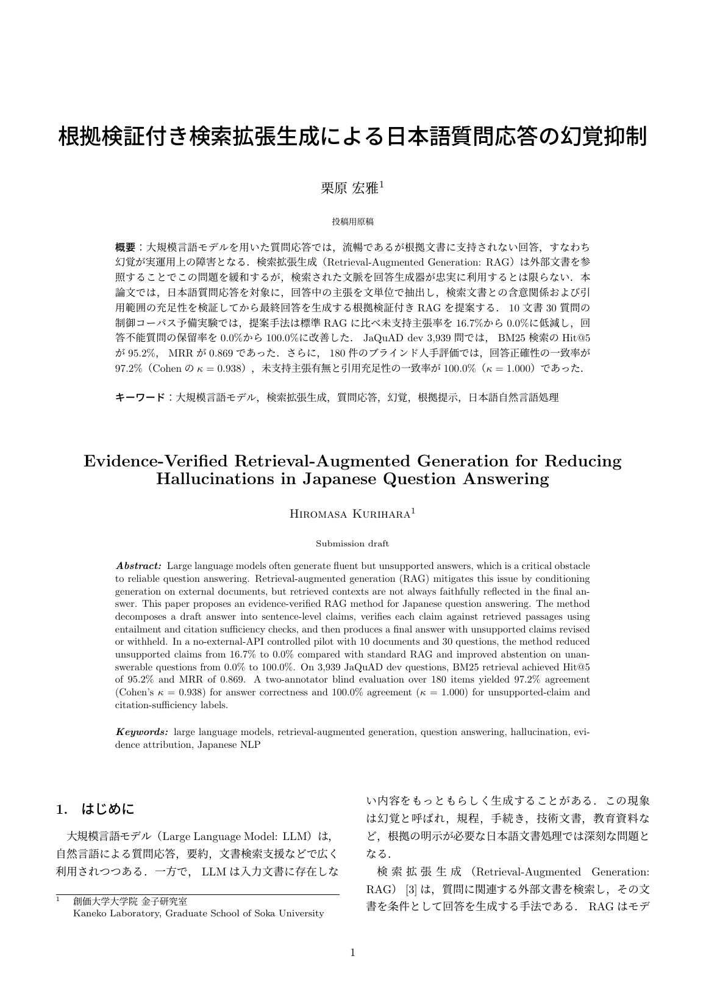

Research Article
根拠検証付きRAGで、
日本語QAの幻覚を抑える

全体正答率 66.7% → 100.0%、回答不能質問の保留率 0.0% → 100.0%、未支持主張率 33.3% → 0.0% 36問の合成制御コーパスで、標準BM25-RAGとEvidence-Verified RAGを比較。
作った理由
RAGは検索結果を使って回答する仕組みですが、検索された文書が質問の要求を満たしていない場合でも、 もっともらしい回答を生成してしまうことがあります。AIエンジニアとしては、回答精度を上げるだけでなく、 答えるべきでない場面を定義し、誤答を抑える設計が重要だと考えました。 なお、36問の合成制御コーパスはBM25-RAGの失敗パターンを確認するための小規模評価であり、実データへの汎用性検証は今後の課題です。
設計判断
まず外部LLM APIに依存しない決定的な実験系を作り、証拠十分性、要求属性、回答可能性を分けて扱いました。 この分割により、モデルを大きくする前に、失敗条件と評価軸を明確にできます。 将来LLMを差し替える場合でも、評価スクリプトやデータセットを再利用しやすい構成にしました。
検証
500問規模のテンプレート拡張、JaQuAD派生データ、人手評価を用意し、McNemar検定とブートストラップ信頼区間で差を確認しました。 研究として見せるため、実験手順、データの制約、未解決の課題も残しています。 成功例だけではなく、評価データの作り方そのものを説明できるようにした点がこの成果物の中心です。